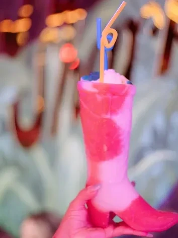

#1

Pink Shark
99-Cent Oysters Every Single Day, 3-6pm
203 N Presa St · River Walk
99-cent oysters every day of the week, 3 to 6pm. Plus a five-hour 'SHARK HOUR' running 3 to 8pm with discounted drinks. There is no other San Antonio oyster deal that hits this hard, and the 4.6 rating tells you the kitchen is keeping up.
Daily, 3-6pm
- 99-cent oysters
+ 1 more deal
Daily, 3-8pm (Shark Hour)
- Discounted Shark Hour cocktail and beer menu